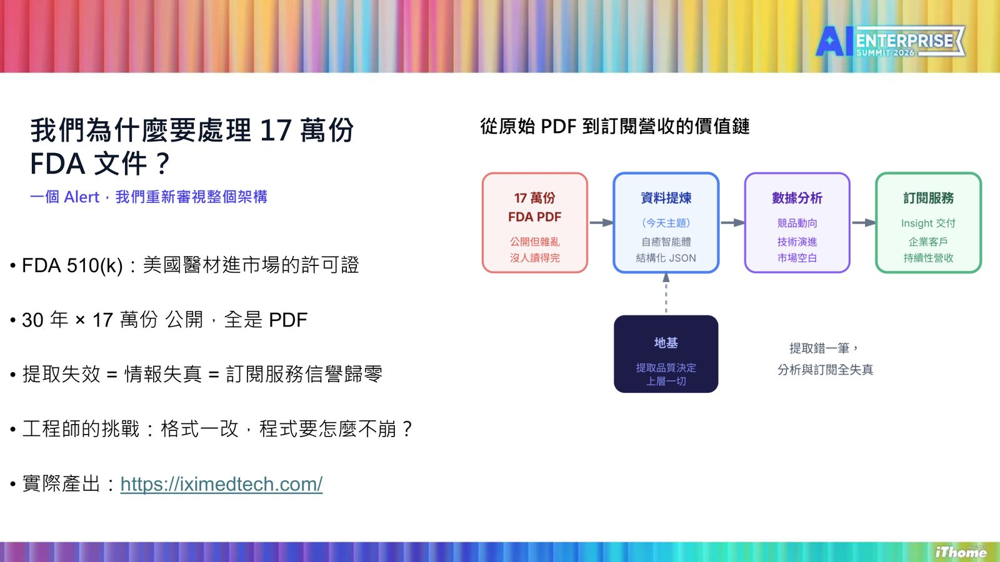
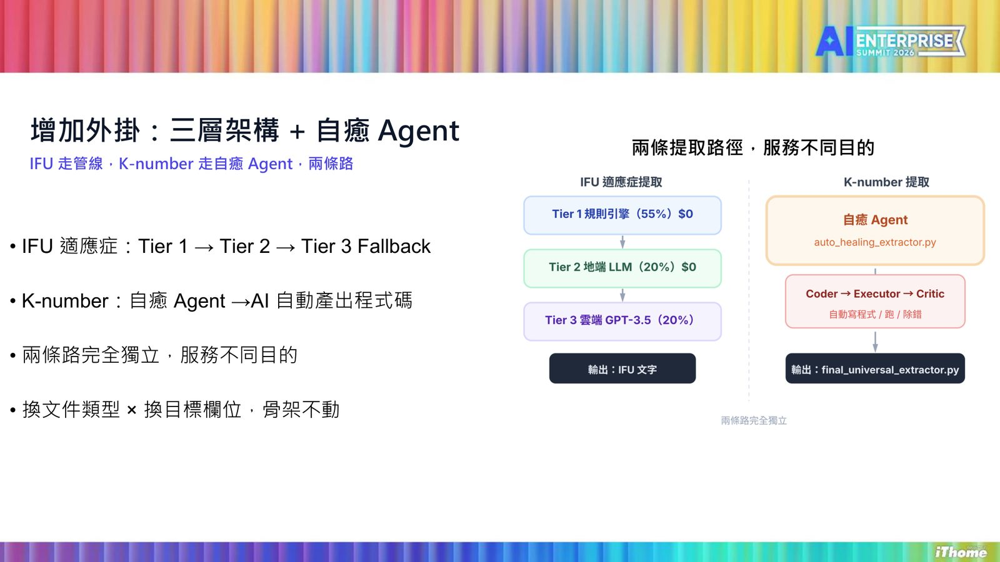
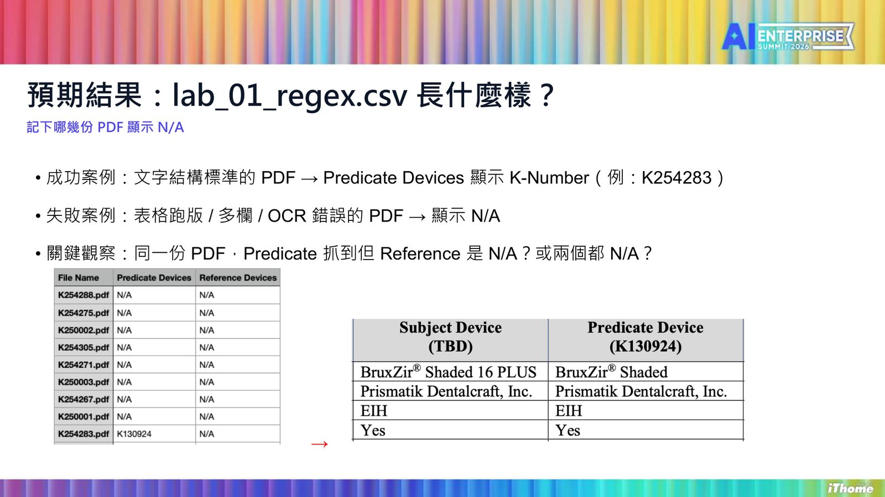
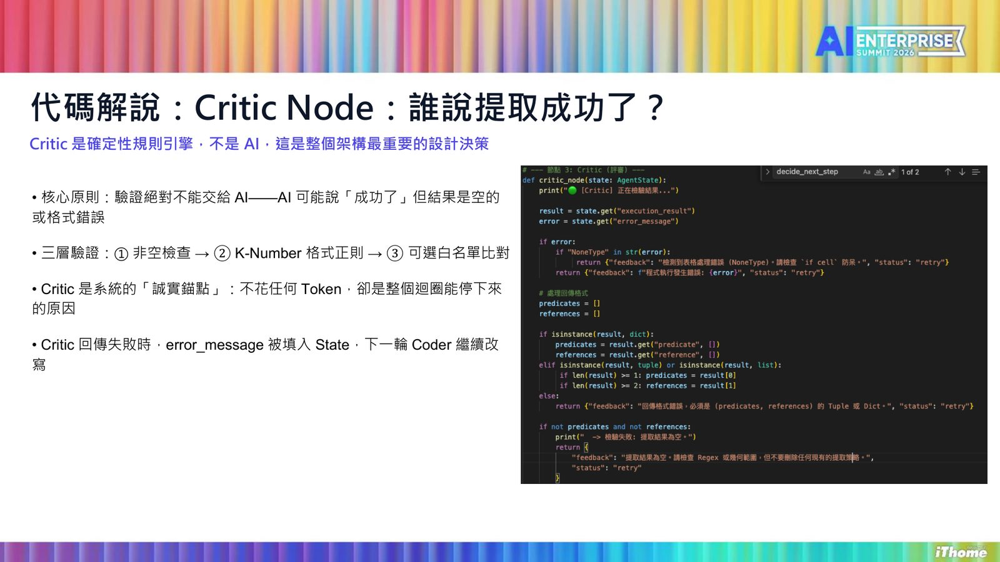

摘要
本講題針對處理 17 萬份 FDA 510(k) 醫材許可 PDF 文件時，因格式微調（如多一個空格）導致傳統正則與幾何定位程式失效、維運成本劇增的痛點，提出以 LangGraph 打造「自癒 Agent」的資料提取架構。該架構包含 Coder、Executor 與 Critic 三節點迴圈，透過 State 物件共享錯誤軌跡（error_trace）進行迭代修正。技術亮點在於「讓 AI 寫程式，而非直接給答案」，且驗證節點（Critic）刻意採用確定性的代碼規則引擎（非空檢查、格式正則、白名單）作為誠實錨點，以防 AI 誤判成功。實務上，此模式已成功結構化提取逾 4 萬份文件，並設有 5 次重試上限與人工審核分流，為企業提供高準確度、可測試且具備容錯自癒能力的次世代文件智能提取方案。
重點整理
- 一次系統失效經驗：K-number 前多了一個空格，提取率從 95% 驟降至 23%，耗費三天工程工時修復
- 架構採兩條獨立路徑：IFU 適應症走 Tier 1→2→3 Fallback 管線，K-number 走自癒 Agent 自動產生程式碼
- 自癒 Agent 以 LangGraph 建構 Coder／Executor／Critic 三節點迴圈，並用 State 物件在重試間共享 error_trace
- Critic 節點刻意採用確定性規則引擎而非 AI 判斷，避免 AI 誤判「成功」但結果為空或格式錯誤
- 已完成超過 4 萬份 FDA 文件的結構化提取，設有 5 次重試上限並在極端案例交還工程師人工審核
重點圖片／架構圖




背景與挑戰
講者說明世博科技顧問長期處理美國 FDA 510(k) 醫材上市許可文件，累積 30 年、17 萬份公開 PDF 資料，作為「政府公開資料→可訂閱商業情報」服務的核心。一次因 K-number 前多出一個空格，導致提取率從 95% 驟降至 23%，耗費三天工程工時排查，讓團隊反思傳統規則式提取「規則永遠補不完」的根本限制。
解法與架構
團隊設計兩條獨立提取路徑：IFU 適應症資訊採用 Tier 1 → Tier 2 → Tier 3 Fallback 的三層管線加幾何座標定位；K-number 等需要應對格式劇烈變化的欄位則交給「自癒 Agent」，由 AI 自動產生、執行並驗證提取程式碼，兩條路徑服務不同目的、互不影響。
技術重點
自癒 Agent 以 LangGraph 打造 Coder、Executor、Critic 三節點迴圈：Coder 依據錯誤訊息重寫程式碼，前 4 次呼叫本地 LM Studio 模型，第 5 次起切換至 GPT-4o 作為 Fallback；Critic 節點刻意採用確定性規則引擎而非 AI 判斷，透過非空檢查、K-Number 格式正則與可選白名單三層驗證，確保「成功」的判定不會被 AI 誤導；State 物件則讓每次重試都能攜帶上一輪的 error_trace，形成越修越聰明的迭代迴圈。
案例與成果
透過 lab_01_regex.py（精準 Regex）、lab_02_geometric.py（幾何座標定位）與 auto_healing_extractor.py（自癒 Agent）三支腳本的逐步比較，展示 N/A 消失率如何隨架構演進而降低，最終累積完成超過 4 萬份 FDA 文件的結構化提取，並產出 final_universal_extractor.py 作為持久的工程資產。
結論與啟示
講者強調核心理念是「讓 AI 寫程式，而不是讓 AI 直接給答案」，因為程式碼可跑、可測試、可版控、可重用，而非一次性且難以驗證的 AI 回答。同時誠實面對自癒機制的限制，設有 5 次重試上限，遇到反覆失敗的極端案例會強制中斷並交還工程師人工審核，避免系統假裝成功。